Connect - Déclarer et gérer ses tickets d'incidents
Présentation
est le portail qu'utilise Doxense pour gérer l'ensemble des relations entre notre réseau de clients et de partenaires.
Le portail Connect vous permet :
-
de soumettre des demandes de licences ;
-
de déclarer des incidents relatifs à la gestion de vosp produits sous forme de tickets au Support Doxense.
Grâce au formulaire de déclaration d'incident, vos demandes sont structurées et vous pouvez y ajouter des informations complémentaires (logs, fichiers de configuration, captures d’écran, etc.) ; -
de suivre le traitement de vos tickets et d'être notifié lorsque leur statut change ;
-
d'être associé aux demandes de tickets des membres de votre organisation et d'en suivre le traitement.
Son utilisation rigoureuse permet à Doxense® de vous apporter le meilleur support en ligne, conforme à nos engagements contractuels, tout en garantissant la traçabilité du traitement des demandes. Elle permet également de nous aider à concevoir la documentation adaptée à vos attentes et à vos besoins.
La réponse du Support Doxense à un ticket est fournie pour les logiciels commercialisés par Doxense et n’inclut pas l’assistance sur les produits tiers avec lesquels un logiciel Doxense est susceptible de se connecter ou de communiquer. Dans le cas d'une interaction avec d'autres produits, l’assistance du Support Doxense est limitée au paramétrage du logiciel Doxense pour son bon fonctionnement avec le logiciel tiers.
L’assistance technique Doxense est effectuée auprès d'interlocuteurs qui ont formés à la configuration et à l’utilisation du (ou des) logiciel(s) Doxense.
Ces interlocuteurs habilités doivent s’assurer que les prérequis du logiciel sont bien respectés (cf. section prérequis dans doc.doxense.fr) :
-
socle serveur disponible
-
spooler d’impression fonctionnel
-
périphérique d’impression disponible et opérationnel
-
ports nécessaires au bon fonctionnement ouverts
-
base de données active
-
administrateur habilité à gérer des logiciels à impact (EDR, antivirus, firewall, etc.) disponible pour intervenir sur le site de l’incident.
Pour faciliter l'assistance technique, vous vous engagez à exclure les logiciels de surveillance et d’analyse (par exemple logiciel antivirus, logiciel EDR ou autre) et à valider que l'anomalie persiste lorsque ces logiciels sont désactivés.
S'inscrire dans Connect
L'inscription sur le portail Connect n'est soumise à aucune condition.
-
Rendez-vous sur le site Connect (https://connect.doxense.com) :
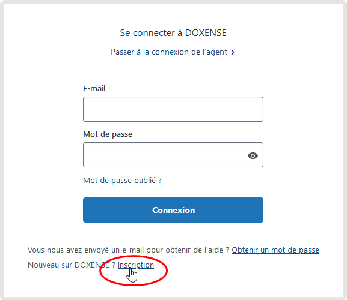
{kind=link}
-
Dans l'interface Se connecter à Doxense, cliquez sur le lien Inscription :
-
Dans l'interface S'inscrire à Doxense, saisissez votre nom complet (prénom + nom) et votre adresse de messagerie :
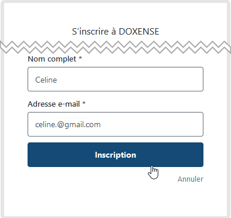
{kind=link}
-
Cliquez ensuite sur le bouton Inscription :
Un message vous invite à consulter votre messagerie :
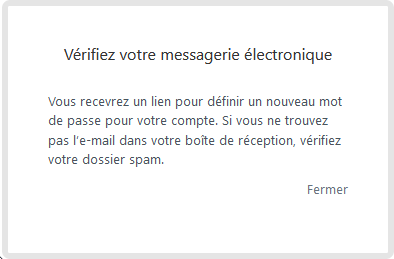
{kind=link}
-
Rendez-vous dans votre messagerie et ouvrez le message intitulé Créer un mot de passe Doxense.
N.B. : surveillez votre boîte de spams et restez patient car il arrive que le mail mette un peu de temps à parvenir dans votre messagerie :
-
Cliquez sur le lien Créez un mot de passe :
{kind=link}
Saisissez votre mot de passe en respectant les conditions listées : 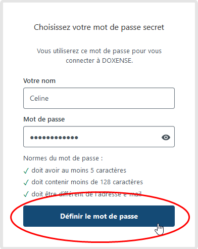
{kind=link}
-
Cliquez sur le bouton Définir le mot de passe.
Vous accédez à la page d'accueil de Connect :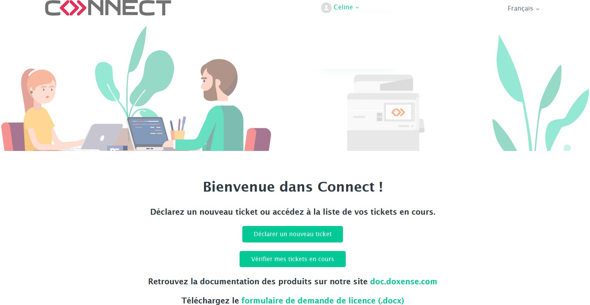
{kind=link}
Accéder au portail Connect
-
Dans un navigateur web, saisissez l'adresse URL https://connect.doxense.com
https://connect.doxense.comDansunnavigateurweb,saisissezl'adresseURL/
-
Dans la boîte d'authentification Se connecter à Doxense, saisissez votre compte : adresse e-mail et mot de passe défini par vos soins.
-
Cliquez sur Connexion :
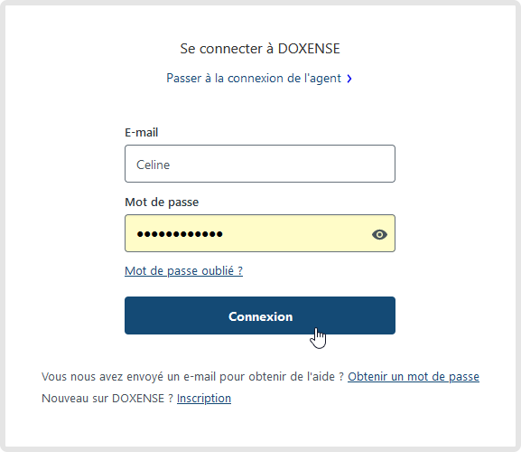
{kind=link}
vous accédez au portail en mode authentifié.
Déclarer un ticket / déclarer un incident
-
Authentifiez-vousdansleportail Connect (https://connect.doxense.com).
-
Dans l'interface de bienvenue, cliquez sur le bouton Déclarer un nouveau ticket :
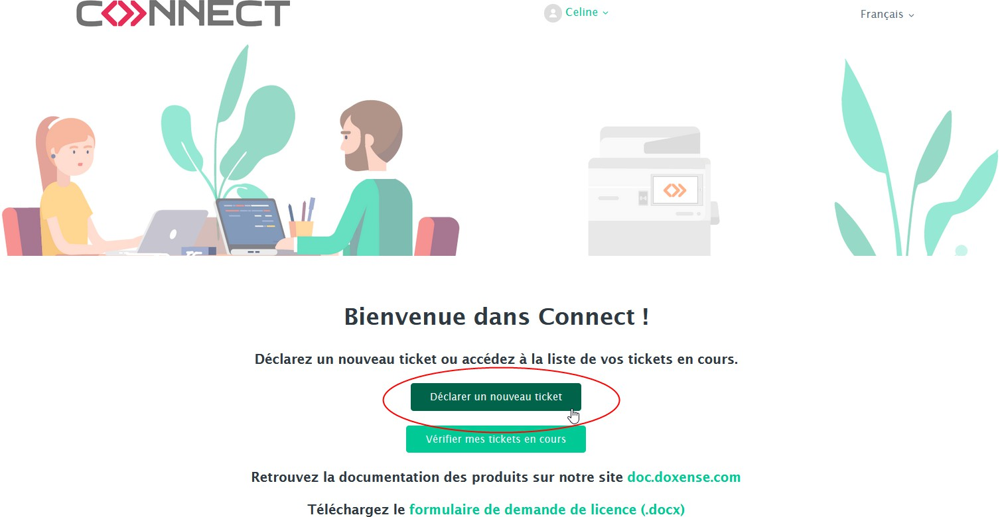
{kind=link}
-
Dans le formulaire Envoyer une demande, sélectionnez le produit concerné ainsi que le type de la demande :
-
question : il s'agit d'une question que vous vous posez à propos du comportement de votre solution et de son paramétrage.
Cette demande ne revêt aucun caractère d'urgence (ex. : "Comment puis-je limiter le nombre d'impressions par utilisateur ?" ; "Comment autoriser un intervenant extérieur à utiliser nos imprimantes ?", etc.). Il peut aussi s'agir d'une demande de licence : dans ce cas, il est indispensable que vous remplissiez le formulaire dédié ; -
incident : il s'agit d'un dysfonctionnement bloquant que vous avez constaté sur la solution et pour lequel vous souhaitez être dépanné rapidement (ex. : "les documents envoyés depuis les PC du service commercial ne sont plus imprimés", etc.).
Bloquant signifie que l'activité d'impression n'est plus possible et impacte directement le fonctionnement de vos services ; -
problème : il s'agit d'un dysfonctionnement non-bloquant que vous avez constaté sur la solution et pour lequel vous souhaitez avoir des explications ou une solution de dépannage (ex. : "les impressions demandées en recto-verso sont imprimées en recto seul", etc) ;
-
tâche : il s'agit d'une tâche de paramétrage ou de développement spécifique que vous adressez à l'équipe Support en vue d'améliorer le fonctionnement de votre solution (ex. : "Nous aimerions modifier les profils d'impression de nos utilisateurs", etc.).
-
-
Ajoutez en pièce jointe toute information complémentaire permettant de qualifier votre demande :
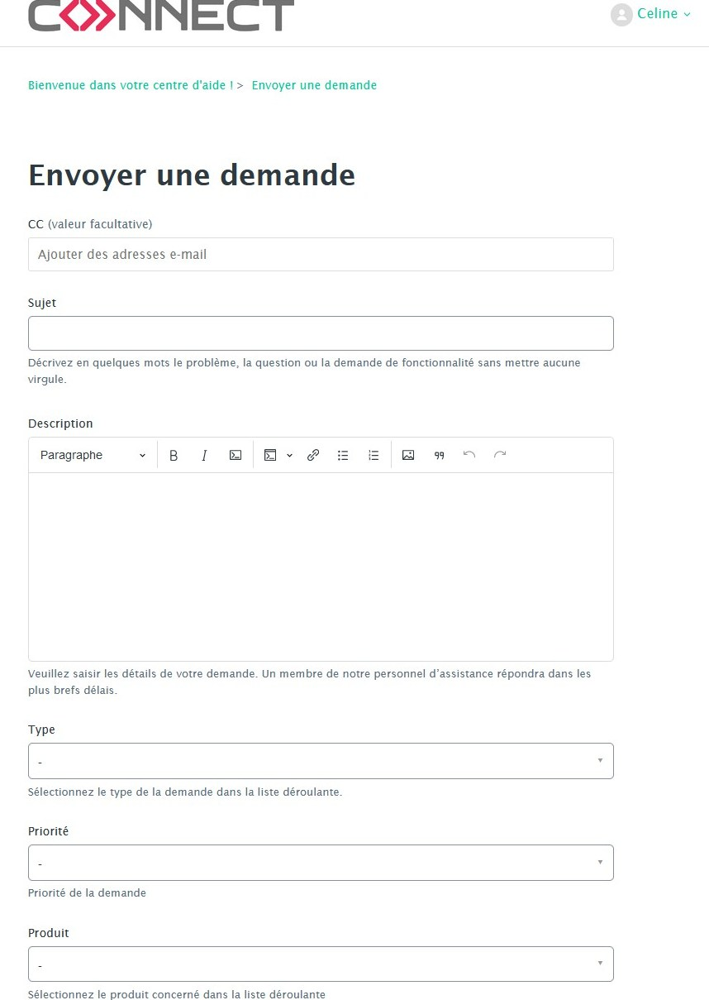
{kind=link}
-
Cliquez sur Envoyer pour adresser votre demande à l'équipe Support.
La demande envoyée s'inscrit dans la liste "Mes demandes".
Tant que cette demande n'est pas close, le statut qui lui est attribué est Ouvert ou En attente de réponse.
Par ailleurs, vous recevez un mail de confirmation d'envoi de votre demande au Support Doxense.
{kind=link}
{kind=link}
Demander une licence
-
Authentifiez-vous dans le portail Connect (https://connect.doxense.com)
-
Depuis l'interface Bienvenue dans Connect, cliquez sur le lien Téléchargez le formulaire de demande de licence :
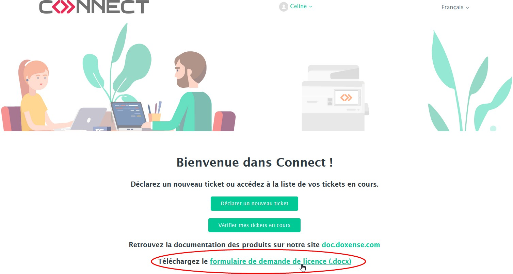
{kind=link}
-
Remplissez le formulaire de demande de licences
-
Une fois le formulaire prêt, depuis l'interface Bienvenue dans Connect, cliquez sur le bouton Déclarer un nouveau ticket :
-
Dans le formulaire de demande Connect, sélectionnez dans la liste le produit concerné ainsi que le type Tâche.
-
Complétez la date d'échéance souhaitées pour la tâche :
-
Cochez ensuite la case Demande de licence.
-
Ajoutez en pièce jointe le formulaire de demande de licence complété (au format .pdf ou .doc).
-
Cliquez sur Envoyer pour adresser votre demande à l'équipe Support :
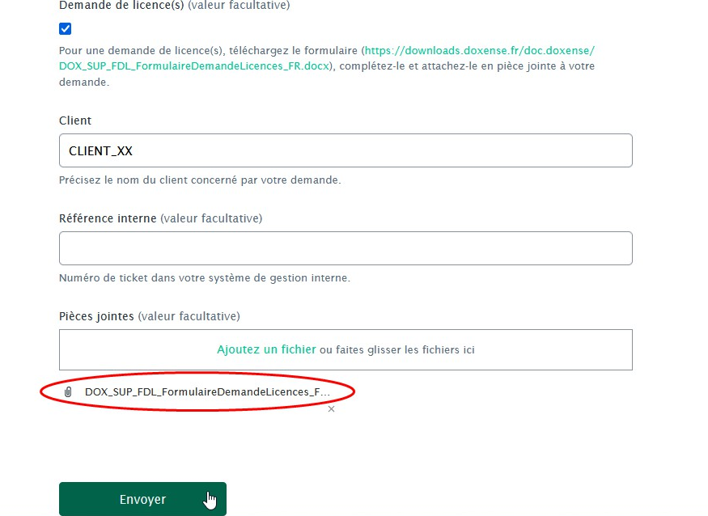
{kind=link}
La demande envoyée s'inscrit dans la liste Mes demandes affichée dans le portail Connect.
Tant que votre demande n'a pas été traitée, le statut qui lui est attribué est Ouvert ou En attente de réponse.
Par ailleurs, vous recevez un mail confirmant l'envoi de votre demande au Support Doxense : 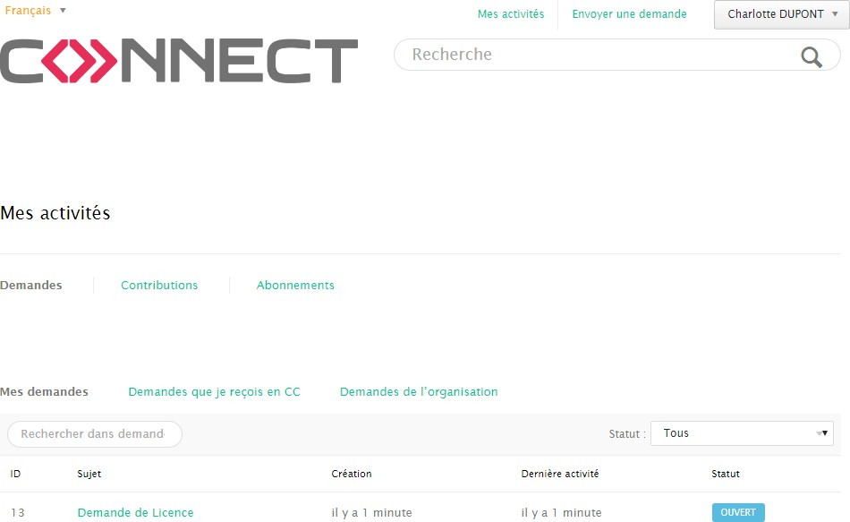
{kind=link}
{kind=link}
Consulter ses tickets
Préambule
Un statut est attribué à chaque demande en fonction de son traitement dans le portail Connect :
-
Ouvert : votre demande a bien été enregistrée dans le portail Connect, mais n'a pas encore reçu de réponse de la part de l'équipe Support ;
-
En attente de votre réponse : votre demande a été étudiée par l'équipe Support qui vous a renvoyé une question (ou une demande de précision) et attend une réponse de votre part ;
-
Résolu : votre demande a été traitée et une réponse y a été apportée par l'équipe Support.
Lorsque le statut de l'une de vos demandes est modifié par le Support Doxense, vous recevez un e-mail vous informant de ce changement de statut.
Par ailleurs, vous pouvez à tout moment vous rendre dans le portail Connect pour suivre l'évolution de vos demandes.
Accéder à la liste des tickets
-
Depuis l'interface Bienvenue dans Connect, cliquez sur le bouton Vérifier mes tickets en cours :
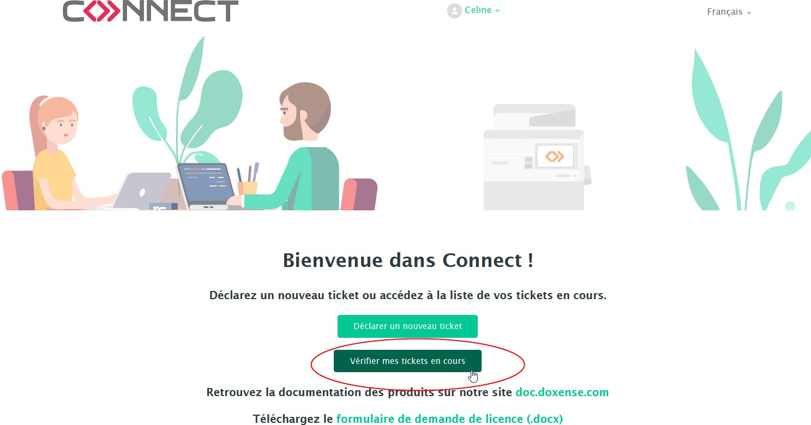
{kind=link}
èVous accédez en mode authentifié aux listes de toutes les demandes envoyées, affichées par ordre antéchronologique.
Ces listes sont au nombre de 3 :
-
Mes demandes : regroupe les demandes que vous avez envoyées ;
-
Demandes que je reçois en CC :regroupe les demandes envoyées par d'autres utilisateurs pour lesquelles vous avez été désigné comme destinataire en copie.Lorsqu'un agent vous désigne comme destinataire en copie, vous êtes notifié, par e-mail, de la réponse à la demande, au même titre que le demandeur initial. Vous pouvez compléter la demande au même titre que le demandeur initial.
-
Demandes de l'organisation :regroupe toutes les demandes envoyées par les autres utilisateurs de votre organisation. Vous disposez du droit de consulter l'ensemble de ces demandes et de les compléter au besoin, au même titre que le demandeur initial. Dans ce cas, ce demandeur est notifié par e-mail.
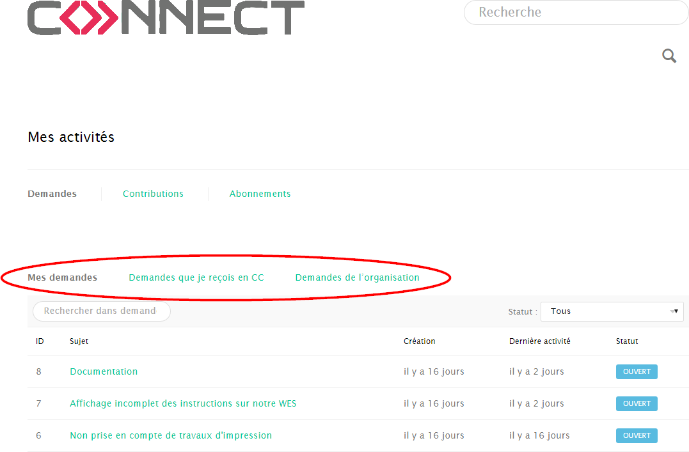
{kind=link}
Chaque liste est dotée d'un moteur de recherche permettant de lancer une recherche dans l'ensemble des demandes à l'aide d'un terme saisi dans le formulaire.
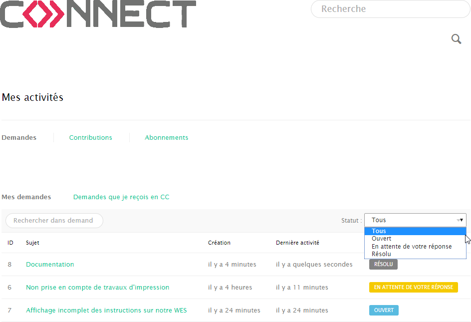
{kind=link}
Chaque liste est également dotée d'un outil permettant de la restreindre selon le statut attribué aux demandes :
Consulter la liste des demandes
Les demandes que vous avez envoyées sont affichées dans la liste Mes demandes.
Vous pouvez consulter le contenu de la demande en cliquant sur la ligne correspondante dans la liste et la compléter au besoin :
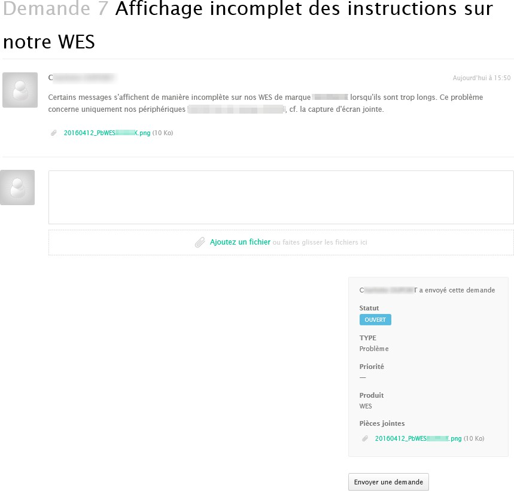
{kind=link}
La demande envoyée fait l'objet d'une notification par e-mail, de même que chaque réponse qui y est apportée par l'équipe Support : vous êtes ainsi informé en permanence du traitement accordé à votre demande.
A chaque étape du traitement, vous êtes en mesure de compléter la demande initiale.
Apporter une réponse à une demande
Lorsqu'une demande s'affiche avec le statut "En attente de votre réponse", cela signifie que l'équipe Support en a suspendu le traitement.
L'équipe ne peut poursuivre son travail qu'avec le complément d'information ou la réponse que vous apporterez : 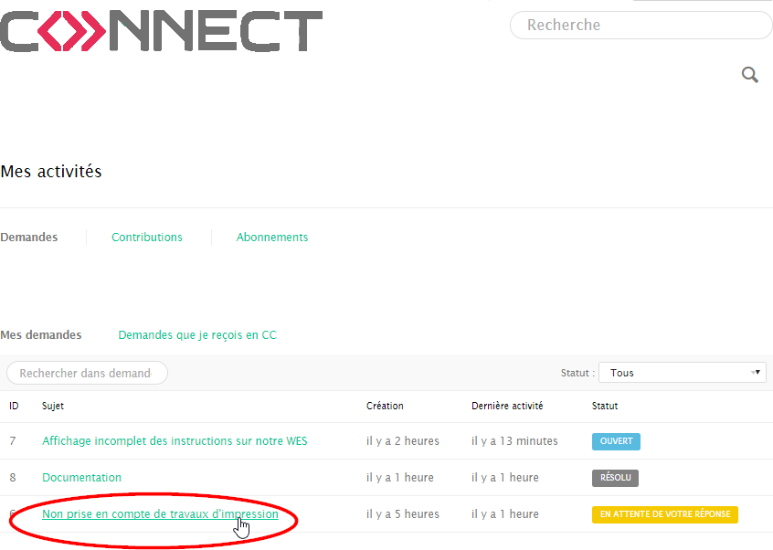
{kind=link}
-
Cliquez sur le libellé de la demande en attente de réponse:
-
Prenez connaissance de la question du message qui vous est adressé par l'équipe Support.
-
Dans la zone de saisie, apportez le complément d'information attendu ou une réponse directe.
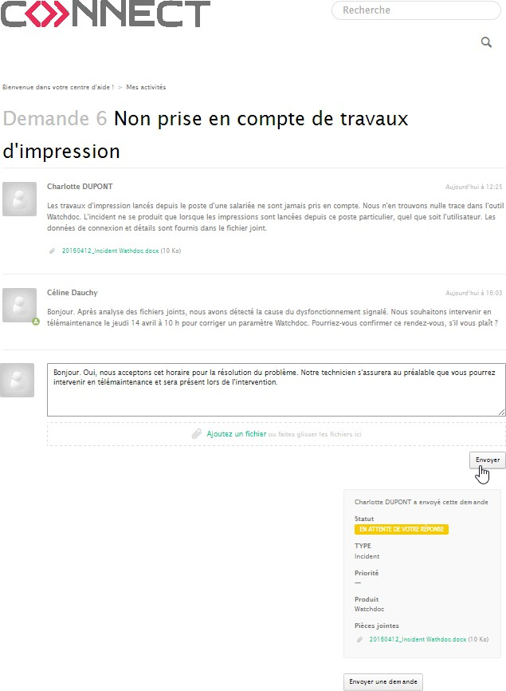
{kind=link}
-
Cliquez sur Envoyer pour valider votre réponse :
è Vous accédez à une interface dans laquelle votre demande initiale ainsi que tous leséchanges entre l'équipe Support et vous sont listés. Dans un bandeau bleu supérieur, un mes- sage vous informe que votre réponse a bien été envoyée.
Par ailleurs, chaque réponse apportée par l'équipe Support vous est notifiée par e-mail. Vous restez ainsi informé de l'évolution de votre demande même si vous n'êtes plus connecté au portail Connect.
Clôturer une demande
Principe
Lorsqu'un agent a traité votre demande et l'a considérée comme Résolue, elle reste affichée dans la liste des demandes pendant 7 jours ouvrés.
Si vous ne menez aucune action sur la demande résolue durant ce délai, elle est alors close automatiquement. Elle reste néanmoins affichée dans la liste de vos demandes, avec le statut Résolu.
Rouvrir une demande résolue
Durant le délai avant fermeture de la demande, vous pouvez la consulter et la rouvrir si nécessaire :
-
accédez à la liste des demandes ;
-
cliquez sur la demande que vous souhaitez rouvrir :
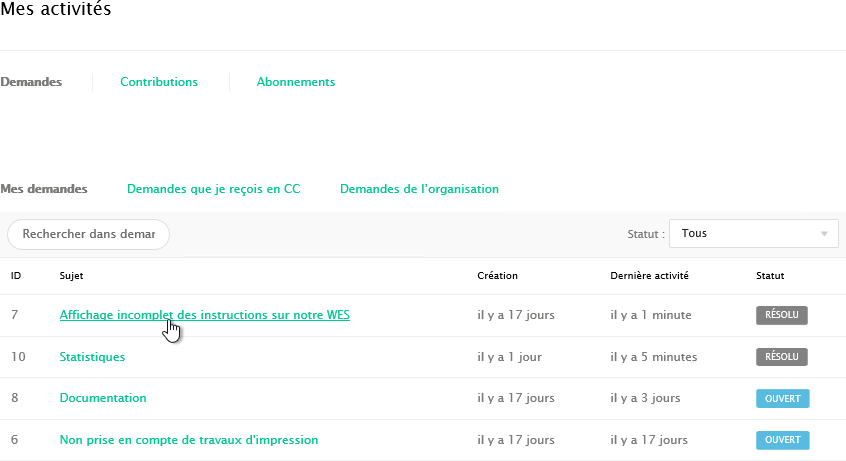
{kind=link}
-
dans la zone de saisie, complétez la demande initiale ;
-
cliquez sur Envoyer pour valider le complément d'information:
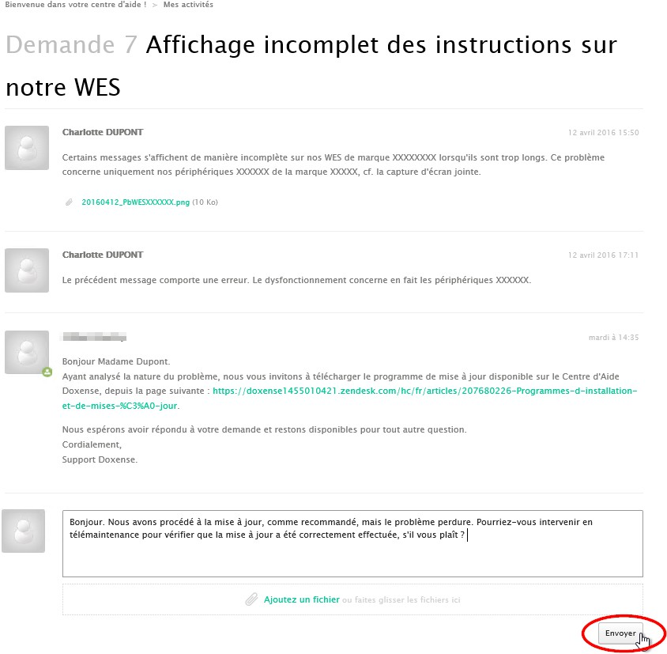
{kind=link}
La demande retourne alors à l'état "Ouvert" jusqu'à sa résolution.
Demander un suivi pour une demande résolue
Au-delà des 7 jours de délai, la demande est jugée résolue. Vous pouvez la consulter, mais ne pouvez plus y ajouter de commentaire. Néanmoins, si vous souhaitez la relancer, vous pouvez en demander le suivi. De la sorte, elle est associée à une nouvelle demande.
Pour créer le suivi d'une demande résolue:
-
dans la liste de vos demandes, cliquez sur la demande résolue :
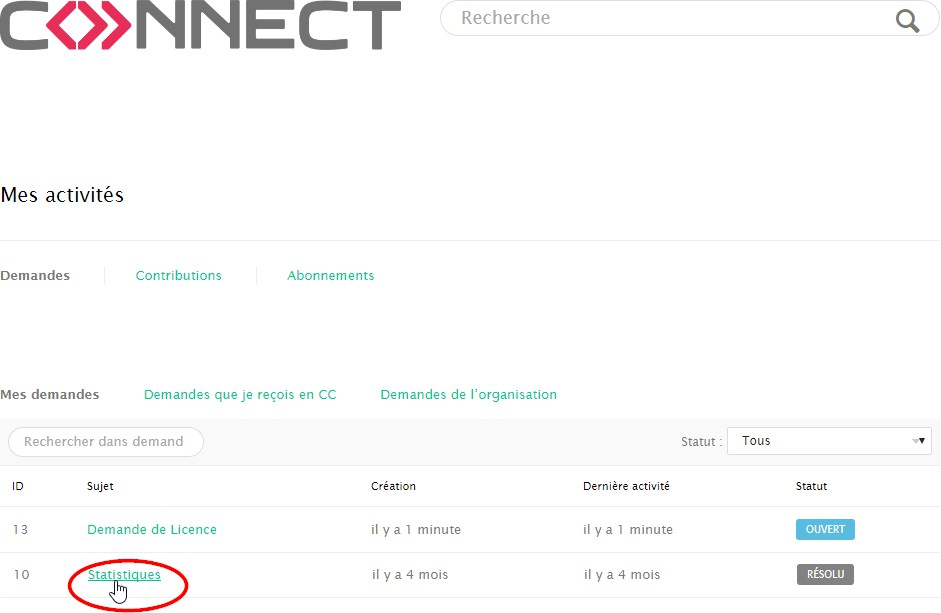
{kind=link}
è Vous accédez au résumé des étapes de votre demande. En guise de conclusion, il est indiqué que la demande est fermée à tout commentaire, mais que vous pouvez créer un suivi. 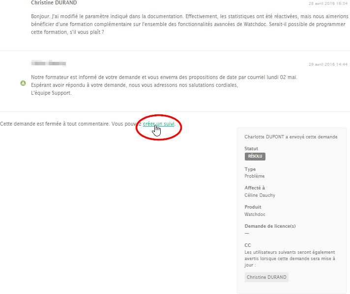
{kind=link}
-
Cliqez sur Créer un suivi : vous accédez au formulaire de demande dans lequel s'affichent le n°, le sujet de suivi ainsi que la description de la demande initiale pour laquelle vous demandez un suivi.
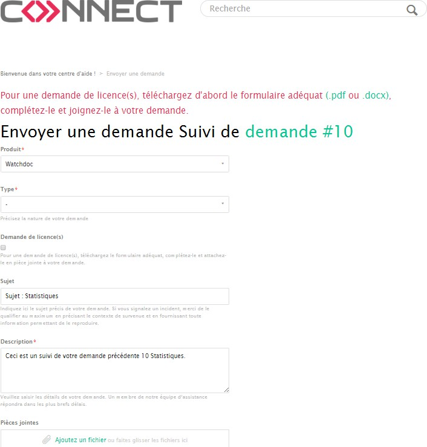
{kind=link}
-
Complétez le formulaire en précisant la raison pour laquelle vous demandez le suivi de la demande initiale.
-
Cliquez sur Envoyer pour confirmer votre demande de suivi.
èVotre demande suivie s'inscrit dans la liste de vos activités affichée dans le portail Connect. Tant que la demande n'a pas été résolue, le statut qui lui est attribué est Ouvert ou En attente de réponse. Par ailleurs, vous recevez un mail de confirmation d'envoi de votre demande à l'équipe Support Doxense®.
Personnaliser le tableau des demandes
Préambule
Le tableau par défaut des demandes a été conçu par le Support Doxense, mais il peut être per- sonnalisé afin d'afficher d'autres informations correspondant à vos besoins.
Personnaliser le tableau des demandes
Le tableau par défaut des demandes a été conçu par le Support Doxense, mais il peut être per- sonnalisé afin d'afficher d'autres informations correspondant à vos besoins.
-
Dans le tableau des demandes, cliquez sur le bouton
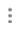
figurant en fin de la ligne d'en- têtes. -
Dans la liste Afficher et cacher les colonnes, cliquez sur Voir plus de colonnes.
-
Dans la liste, les colonnes déjà affichées sont cochées.Décochez les colonnes que vous ne souhaitez pas afficher et cochez celles que vous souhaitez voir :
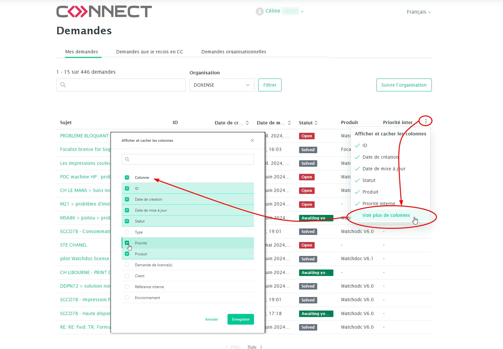
-
Une fois la liste personnalisée, cliquez sur le bouton Enregistrer.
{kind=link}